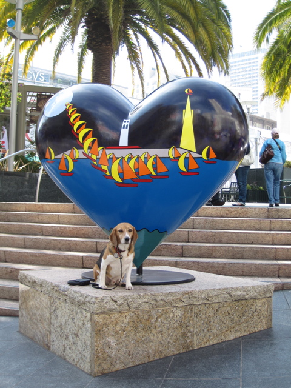

<--Previous Up Next-->

Night & Day
Valentines' Day means a new batch of Hearts in SF in Union Square! At the northeast corner was this one by John Kraft. At each of our three stops tourists took pictures of Huxley along with me and applauded his practiced posing.